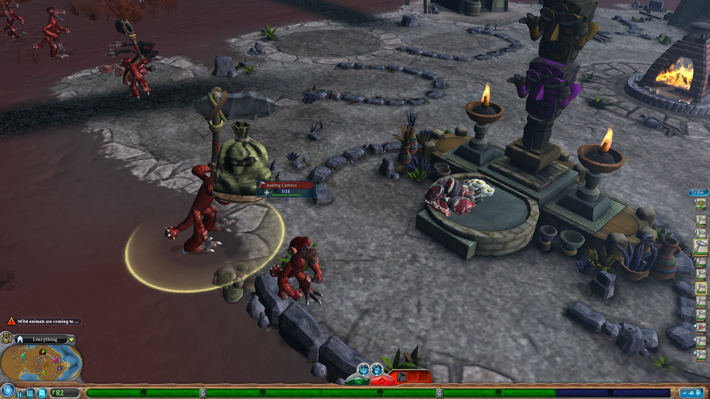

First President of the Figglenut Empire.
First President, Camoux A. Figglenut's first appearence. circa (unknown)
Full name being Camoux Axling Figglenut, his middle named named after his occupation, see more about the naming culture in early stages of Figglenut society. The first president is well known for his first appearance of him bringing a trash bag to the tribe's food table. Camoux A. Figglenut was responsible for kickstarting the industrial revolution and the beginning of the civilized era, making him the first president of what is now known as the Figglenut Empire.